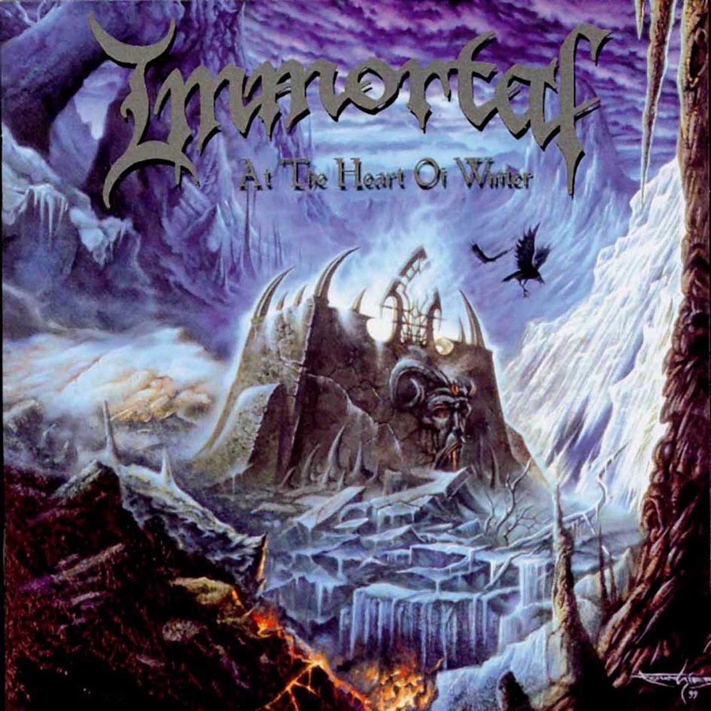
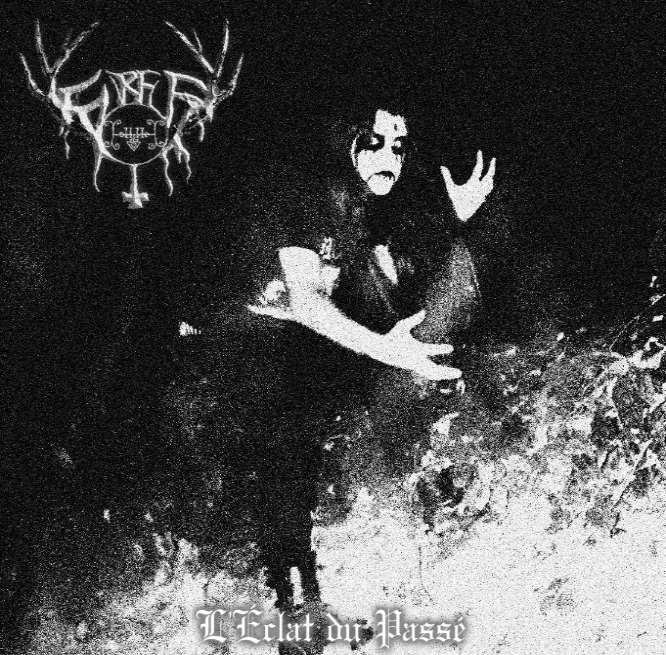
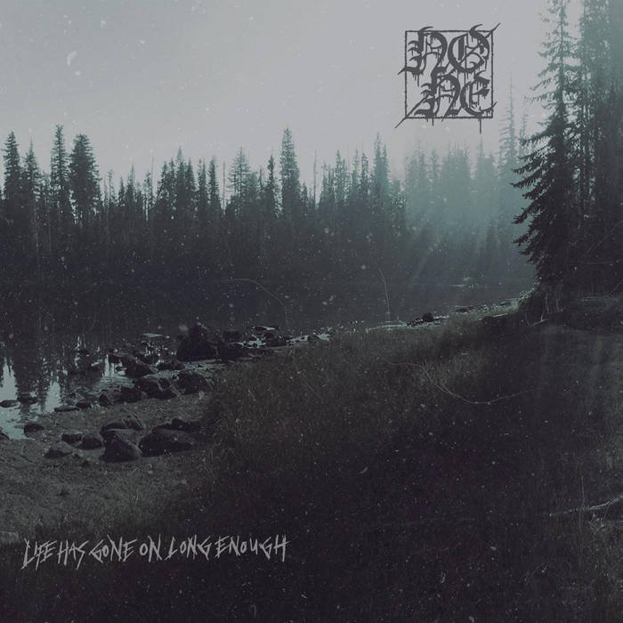
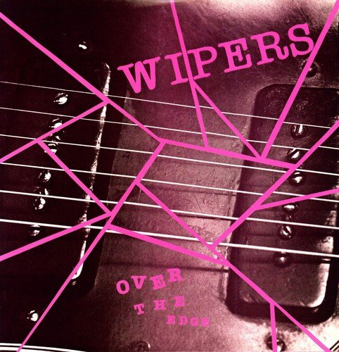
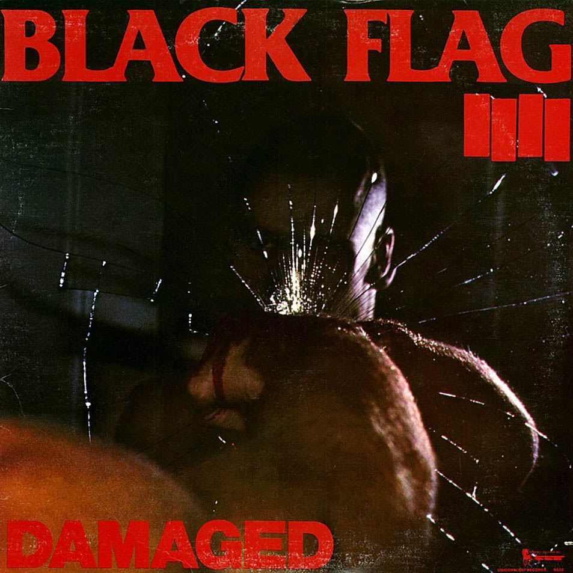
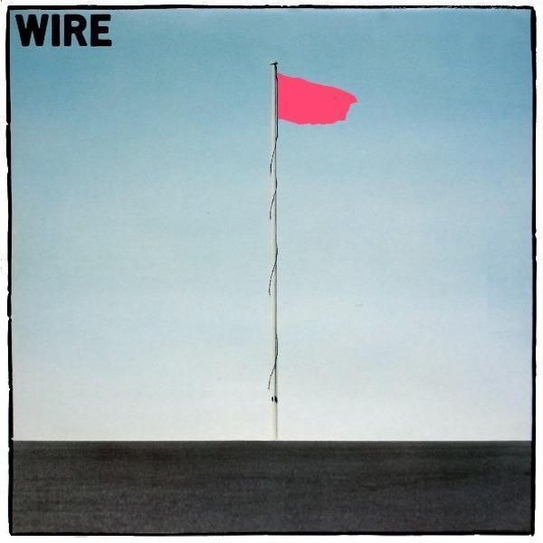
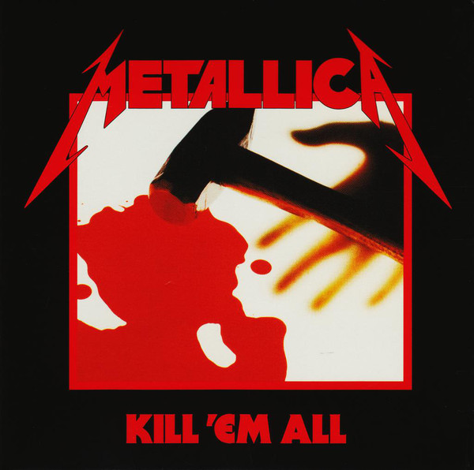
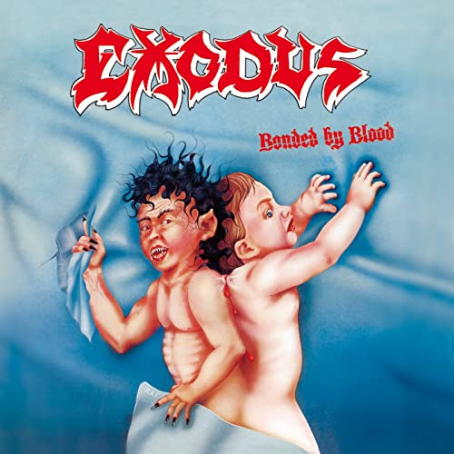
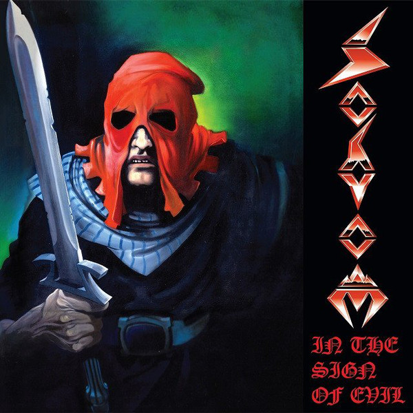

Presentation have been done by Yarik Teplyi
Immortal is a Norwegian black metal band from Bergen. The group was founded in 1991 by frontman and guitarist Abbath and guitarist Demonaz. The pair worked with various drummers, and were later joined by current drummer Horgh in 1996. Immortal's lyrics are based on an overall theme, a realm called Blashyrkh, which is said to be "demon-and-battle-filled" and a "fusion of gothic, Nordic, and heroic themes.
Furfur is a French raw black metal band from Saint-Nazaire. This is one-man band founded in 2017 by Berith. Furfur's lyrics are based on anti-religion, philosophy, sadness. My favorite songs are Ultra Violence and L'éclat du passé.
None is an US Atmospheric/Depressive Black Metal band from Portland. The group was founded in 2015. Members are unknown. None's lyrics are based on misery, grief, alcoholism. I like to listen to his two albums Damp Chill of Life and Life Has Gone On Long Enough.
Presentation have been done by Yarik Teplyi
Wipers was a punk rock band formed in Portland, Oregon, in 1977 by guitarist Greg Sage, along with drummer Sam Henry and bassist Dave Koupal. The group's tight song structure and use of heavy distortion were hailed as extremely influential by numerous critics and musicians. My favorite albums are Over the Edge and Is this Real?
Black Flag is an American punk rock band formed in 1976 in Hermosa Beach, California. They are widely considered to be one of the first hardcore punk bands, as well as one of the pioneers of post-hardcore. My favorite albums are My War and Damaged.
Wire are an English rock band, formed in London in October 1976 by Colin Newman, Graham Lewis, Bruce Gilbert and Robert Grey. They were originally associated with the punk rock scene, appearing on The Roxy London WC2 album, and were later central to the development of post-punk, while their debut album Pink Flag was influential for hardcore punk.
Presentation have been done by Yarik Teplyi
Metallica is an American thrash metal band. The band was formed in 1981 in Los Angeles by vocalist/guitarist James Hetfield and drummer Lars Ulrich, and has been based in San Francisco for most of its career.[1][2] The band's fast tempos, instrumentals and aggressive musicianship made them one of the founding "big four" bands of thrash metal, alongside Megadeth, Anthrax and Slayer. My favorite albums are Ride The Lightning and Kill 'Em All.
Exodus is an American thrash metal band formed in 1979 in Richmond, California. They have gone through numerous lineup changes, two extended hiatuses, and the deaths of two former band members. Their current lineup consists of guitarists Gary Holt and Lee Altus, bassist Jack Gibson, drummer Tom Hunting, and lead vocalist Steve "Zetro" Souza. Bonded By Blood is my favorite album of Exodus
Sodom is a German thrash metal band from Gelsenkirchen, formed in 1981. Along with Kreator, Destruction and Tankard, Sodom has been referred to as one of the "Big Four" of Teutonic thrash metal. In The Sign of Evil is my favorite album of Sodom.
